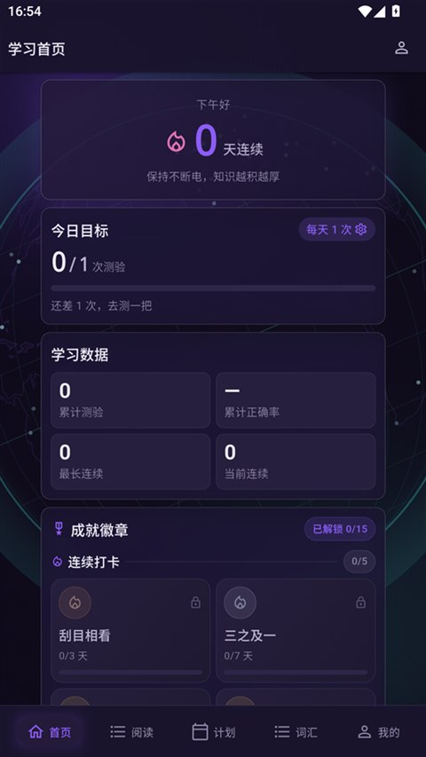
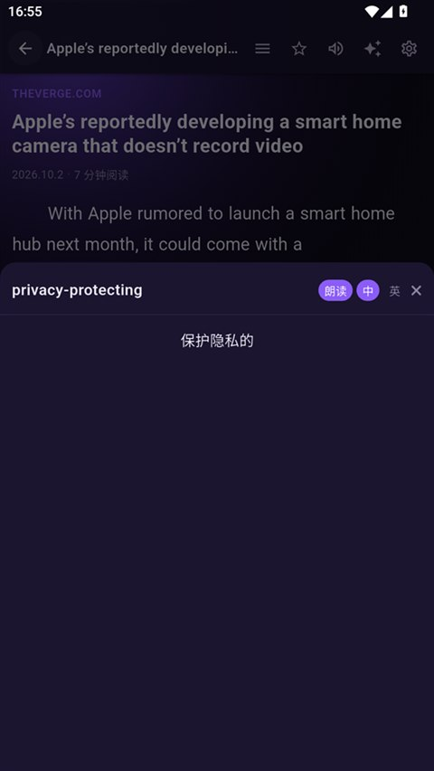
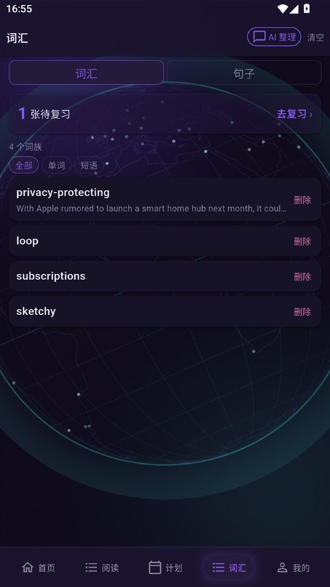
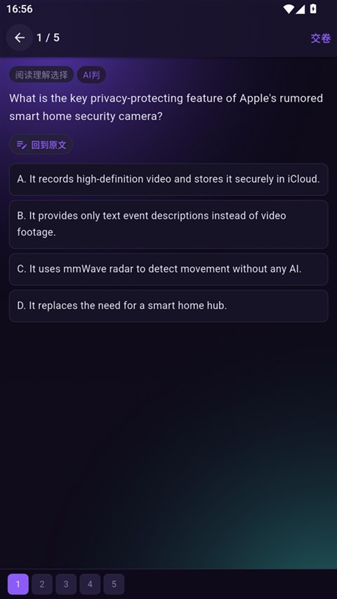
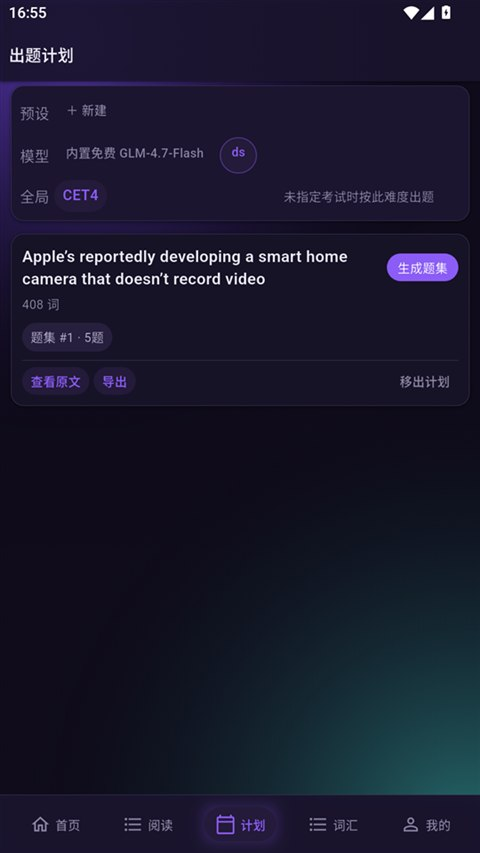

读
时文阅读
订阅自己的 RSS 源，自动抽取正文；读一篇就攒一点见闻。
ANDROID · 免费 · 本地优先
英语时文阅读 + 学习激励：读得越多， 环球等级越高

MODULES / 四个模块
阅读是入口，词汇是沉淀，测验是检验，激励是让你明天还愿意打开它。四件事各自独立，又能接成一条回路。
订阅自己的 RSS 源，自动抽取正文；读一篇就攒一点见闻。
正文里点词即沉淀，按 FSRS 间隔重复排期，句子也能一起收藏。
13 类考试难度自动出题，AI 与本地规则双重判分，错题自动归档。
每日航程、连续航行、护航与勋章，把「坚持」变成看得见的东西。
SCREENS / 界面




GET STARTED
不用注册，不用联网同步。装上先订一个自己常看的源，剩下的它会替你排好。
下载 Android 版LATEST / 仅 ANDROID 8.0+ / 覆盖安装不丢数据
NOTICE / 说明
仅 Android
需要 Android 8.0 及以上。首次安装时系统会提示「允许安装未知应用」。
覆盖安装不丢数据
新版本沿用同一签名，直接覆盖安装即可，学习记录与收藏都会保留。
数据只在本地
无账号、无上传。只有你配置的大模型与翻译接口会收到请求。